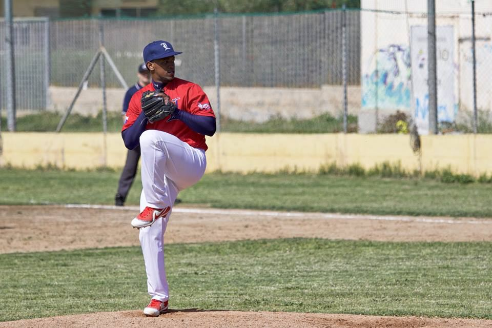

Siamo arrivati alla settimana che conduce alla quarta giornata del girone di andata per il Campionato di Serie B 2019, facciamo il punto della situazione in casa Lancers.
La prima giornata sul campo di Lastra a Signa contro il Cali Roma è stata rinviata per campo impraticabile, dopo vari lavori per ripristinare il terreno di gioco ed un paio di inning giocati gli ufficiali di gara hanno deciso di non proseguire la partita con l’aumentare delle precipitazioni.
La settimana successiva è arrivata la prima trasferta per il team di Barbieri e Co., destinazione Montefiascone, squadra rinforzata durante l’inverno da atleti provenienti dal Viterbo che non disputerà la Serie A2 quest’anno.
Prima trasferta, prima sconfitta ma fortunatamente anche prima vittoria; i Lancieri tornano da Montefiascone con un pareggio fondamentale considerate le importanti assenze, ancora fuori Becattini e Baratella, ed altri giocatori non al 100%.
In gara 1 la squadra non è riuscita a reagire ad una partenza poco lucida di Menoni che, ad onor del vero, ha affrontato un lineup in ottima forma e particolarmente fortunato; risultato finale 10 a 1 per i padroni di casa.
La seconda partita si è sbloccata a nostro favore sul finale, sostanziale equilibrio tra le due squadre fino a quando le mazze bianco/blu non hanno iniziate a far sentire la propria forza rispondendo ai due punti della squadra laziale e segnandone altri negli inning successivi; risultato finale 3 a 12 per i Lancers.
Il fine settimana appena terminato ha condotto i Lancers ad affrontare la Catalana di Alghero in quella che viene considerata la trasferta più difficile della stagione, in termini di avversari e logistica.
In questi ultimi anni la squadra sarda, avversari ai tempi della Serie C, si è rinforzata sul monte con i fratelli D’Amico, Yovani e Leonardo, vecchie conoscenze dell’IBL e della Nazionale Italiana.
La situazione della squadra non è migliorata, anzi, nella gara del mattino lo staff tecnico ha dovuto anche fronteggiare l’uscita di Parrini per un problema muscolare alla schiena che lo ha tenuto fuori dal campo per l’intera giornata.

Questo ulteriore imprevisto non ha destabilizzato l’animo grintoso e caparbio di questo gruppo, impronta caratteristica del manager Barbieri, che ha risposto presente già dal primo inning con il fuoricampo di Cano.
Altri tre punti arrivano alla quarta ripresa con una serie di battute valide e proprio in quell’inning, dopo una battuta da due basi, Parrini dovrà lasciare il campo sulla successiva corsa a casa base.
Sul punteggio di 5 a 0 la Catalana trova una reazione e accorcia le distanze con una serie di battute profonde; sul punteggio di 6 a 5 per i Lancieri si arriva alla nona ed ultima ripresa.
L’attacco bianco/blu segna un altro punto importante ed il partente Perez chiude definitivamente le possibilità di recupero dei sardi con due strikeout; risultato finale 5 a 7 Lancers.
Ottima prova di tutta la squadra sia in fase offensiva che difensiva, da evidenziare il primo fuoricampo di Cano e Diaz con la maglia dei Lancers.
Gara 2 all’insegna dei giovani; in campo ben quattro atleti sotto la maggiore età; Menoni partente, Repetti dietro casa base, Pasquini al centro e Ferrini all’esterno destro.
Partita in grande equilibrio dominate dai pitcher e dalle difese, la Catalana trova il vantaggio alla quarta ripresa su un calo del partente lastrigiano; lo staff tecnico opta per un cambio mandando il veterano Nannucci sul monte.
Con un solo out e le basi piene la difesa completa un doppio gioco difensivo (alla fine saranno cinque totali) e chiudono la ripresa, nel frattempo anche Ortiz si infortuna ad una mano ed esce dal campo.
I Lancers cercano di reagire ma la fortuna non gira dalla loro parte, buoni contatti che però non portano a punti; all’ottavo la squadra sarda allunga con altri due punti sul rilievo Degl’Innocenti, si va all’ultimo attacco e quindi ultima possibilità di rimonta sul punteggio di 3 a 0.
Il rilievo catalano, dopo un out facile, perde la concentrazione e i battitori toscani sono abili nello sfruttare la situazione: alcune basi su ball, buone battute e qualche errore condannano la Catalana che subisce ben 10 punti; nell’ultima difesa si registra un ulteriore puntodei locali che rappresenta solamente una piccola sbavatura; risultato finale 4-10 Lancers.
In un momento di particolare bisogno sul finale di gara c’è stato anche il tempo di rivedere in campo Baratella; un segnale importante per lo staff tecnico e per la squadra che nell’ultimo periodo ha una lista infortunati troppo lunga.
Prossimo appuntamento fissato per domenica 5 Maggio sul Lancers Field contro i Thunders di Salerno, vi aspettiamo!